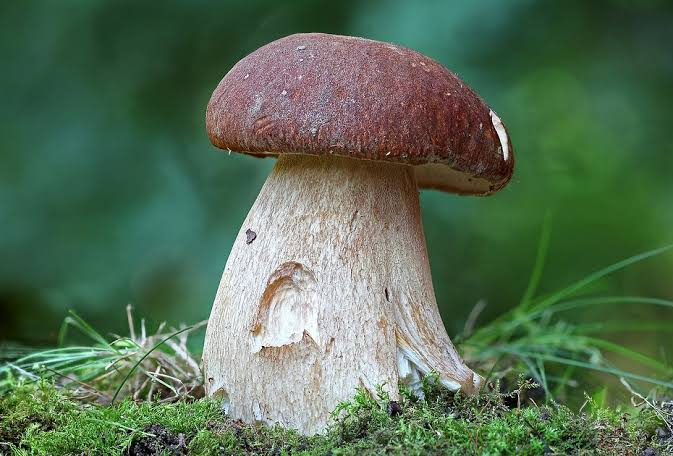
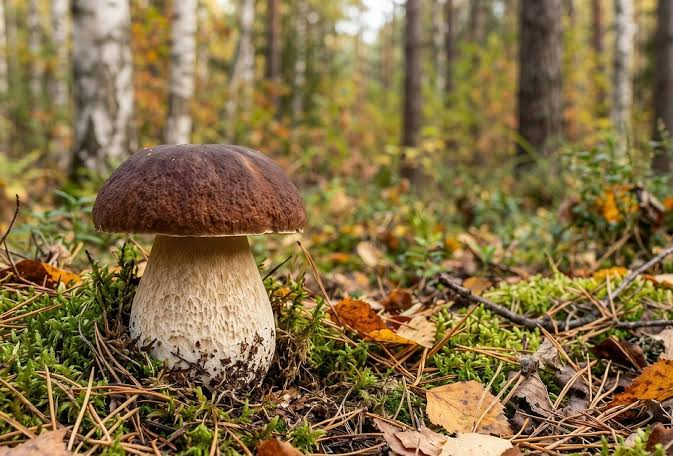

Білий гриб вважається королем серед грибів. Він має неперевершений смак та аромат, тому його дуже цінують кулінари у всьому світі. Збирати ці гриби в лісі — суцільне задоволення.

Боровики часто ховаються під опалим листям або мохом, тому знайти їх буває непросто. Ростуть вони переважно у хвойних та змішаних лісах, утворюючи мікоризу з різними деревами.
Вживання білих грибів корисне для здоров'я, оскільки вони містять багато вітамінів та мікроелементів. Вони чудово підходять для сушіння, смаження, маринування та варіння супів. Головне правило грибника — уважність.
початок